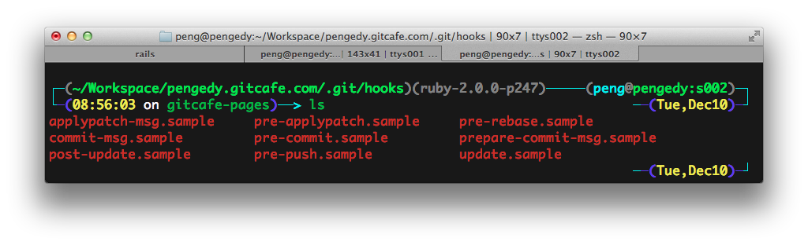

Git Hooks (I): 介绍
最近我在尝试搭建一个利用Git直接部署生产代码的服务器，查了许多资料，了解到需要用到Git Hooks这一特性，就顺便看了一下。
什么是Git Hooks？
话说，如同其他许多的版本控制系统一样，Git也具有在特定事件发生之前或之后执行特定脚本代码功能（从概念上类比，就与监听事件、触发器之类的东西类似）。Git Hooks就是那些在Git执行特定事件（如commit、push、receive等）后触发运行的脚本。
按照Git Hooks脚本所在的位置可以分为两类：
- 本地Hooks，触发事件如commit、merge等。
- 服务端Hooks，触发事件如receive等。
Git Hooks能做什么？
Git Hooks是定制化的脚本程序，所以它实现的功能与相应的git动作相关；在实际工作中，Git Hooks还是相对比较万能的。下面仅举几个简单的例子：
- pre-commit: 检查每次的commit message是否有拼写错误，或是否符合某种规范。
- pre-receive: 统一上传到远程库的代码的编码。
- post-receive: 每当有新的提交的时候就通知项目成员（可以使用Email或SMS等方式）。
- post-receive: 把代码推送到生产环境。（这就是我想要做的）
- etc…
更多的功能可以按照生产环境的需求写出来。
Git Hooks是如何工作的？
每一个Git repo下都包含有.git/hoooks这个目录（没错，本地和远程都是这样），这里面就是放置Hooks的地方。你可以在这个目录下自由定制Hooks的功能，当触发一些Git行为时，相应地Hooks将被执行。
这里是一个Git Hooks列表，现在如果觉得不是很明白，不用担心，以后我会继续讲：
- applypatch-msg
- pre-applypatch
- post-applypatch
- pre-commit
- prepare-commit-msg
- commit-msg
- post-commit
- pre-rebase
- post-checkout
- post-merge
- pre-receive
- update
- post-receive
- post-update
- pre-auto-gc
- post-rewrite
 图中是我一个本地repo的git hooks示例。
如何开始使用Git Hooks？
好了，前面啰嗦一大堆，这里才是重点。
如图中所示的文件，是由本地执行的脚本语言写成的，尽管这些文件默认会是Shell Script，你完全可以给它替换成自己喜欢的Ruby，Python或者Perl。
举个例子，它是这个样子的：
关于这些脚本文件的命名，细心的读者就会发现图中的文件都是上面Git行为列表中列出的名称加上后缀.sample。没错就是这样，把那些文件的后缀去掉，或者以列表中的名字直接命名，就会把该脚本绑定到特定的Git行为上。
所以说，Git Hooks的正确操作方式是：写脚本。
Git Hooks项目介绍
- node-hooks : 一个命令行下的Git Hooks管理工具
- git-hooks : 一个全面的Git Hooks管理工具
- Git::Hooks : 一个实现Git Hooks的框架
- etc…